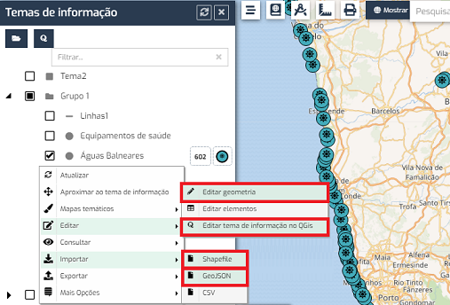
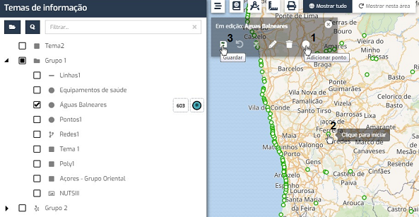
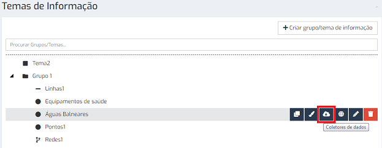
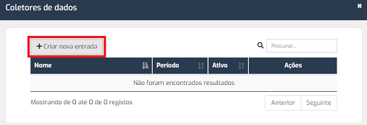
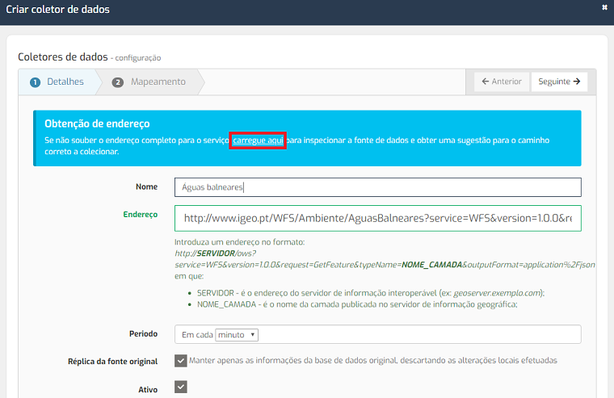
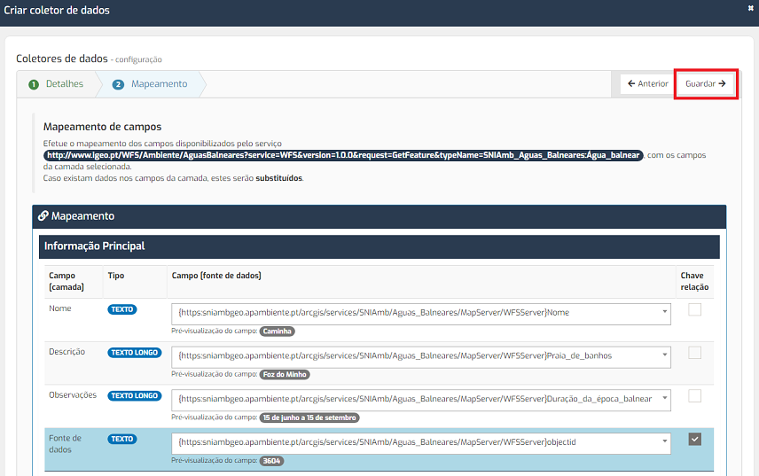
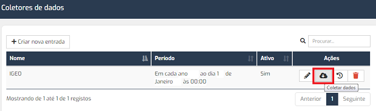
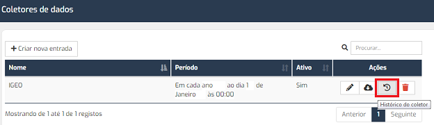

FAQs
A criação de novos registos/elementos pode ser efetuada por importação de shapefile, de GeoJSON, por georreferenciação direta na aplicação ou através do QGIS, opções estas representadas na imagem seguinte e descritas abaixo:

Consultar secção "Como importo informação para os temas".
Consultar secção "Como importo informação para os temas".
A criação de elementos diretamente na aplicação é efetuada através da opção "Editar > Editar geometria", botão “adicionar”, seguindo os passos da figura.

A aplicação permite criar elementos com o auxílio do QGIS, através da opção "Editar > Editar tema de informação no QGIS".
A criação de elementos pode ainda ser feita por cópia de informação espacial “residente” noutros sistemas interoperáveis. Para tal, é necessário a configuração dos coletores de dados que irão copiar essa mesma informação para os temas da aplicação, através da janela "Temas de Informação", no botão "Coletores de dados".



A aplicação dispõe de uma ajuda para configuração do serviço, através do link "carregue aqui".

Todos os coletores de dados podem ser coletados manualmente. Para tal, é necessário clicar no botão "Coletar dados" e aguardar que o processamento termine.

As operações efetuadas pelos coletores podem ser consultadas na janela "Histórico do coletor".

Este documento foi gerado pelo HelpMaker Light — Copyright © Hypervisual 2008-2017.